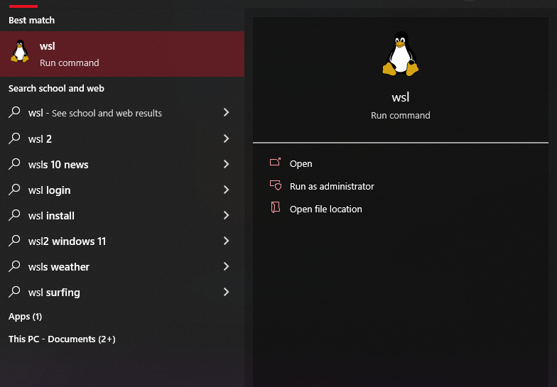

Windows Subsystem for Linux (WSL) is a feature in Windows 10 and above that allows users to run a GNU/Linux environment - including Linux command-line tools, utilities, and applications - natively on Windows.
WSL allows users to use Linux-based software and tools on their Windows device without having to dual-boot a Linux operating system (OS) or use a virtual machine (VM).
WSL offers multiple benefits to users including:
Compatibility: Many software developers and system administrators use Linux-based tools and software, and WSL allows them to work with those tools directly on their Windows devices.
Ease of use: With WSL, you don't need to set up a separate Linux environment, and you don't have to worry about compatibility issues between Windows and Linux.
Speed: WSL is faster than using a virtual machine or dual-booting, because it runs directly on the Windows kernel.
Some common use cases for WSL include:
Software development: If you're a software developer, you may need to use Linux-based tools like Bash, Git, and Python, and WSL allows you to do so on your Windows device.
System administration: If you work with servers or cloud-based infrastructure, you may need to use Linux-based command-line tools to manage your systems, and WSL can help you do that on your Windows device.
Education: If you're learning Linux, WSL can provide you with a way to practice Linux commands and tools without having to set up a separate Linux environment.
WSL requires Windows 10 version 2004 and higher or Windows 11.
To install WSL, you will need to use a command-line interface (CLI). A CLI is a user interface that allows users to interact with a computer program or operating system through text commands entered into a command-line interface, rather than through a graphical user interface (GUI).
Two CLIs are available by default to Windows Users:
Command Prompt (also known as cmd.exe) is the default command-line interface for Windows and is installed by default on Windows devices. It provides a basic set of commands that can be used to perform tasks such as navigating the file system, running programs, and managing files and folders.
PowerShell is a is a powerful and feature-rich command-line interface for Windows that provides a more modern and robust scripting environment compared to Command Prompt, particularly for advanced users and system administrators who need to perform complex tasks and automate tasks.
NOTE: The following guide uses PowerShell.
| Run as Administrator |
|---|
|
wsl --install
| Install WSL |
|---|
NOTE:
wsl --installruns properly when WSL is not installed on the device. If WSL help text appears after running the command, then WSL may already be installed on the device.
The first step in WSL is setting a username and password for the distribution.
NOTE: Each Linux distribution is assigned its own separate username and password. This username and password is unrelated to any Windows user credentials.
NOTE: The following examples use the Kali Linux WSL distribution.
After installation is complete, open WSL using the start menu:
| WSL on the Start Menu |
|---|
|  |
| Enter New Username and Password |
|---|
 |
NOTE: When entering a password in a Unix environment, the text does not appear on the screen as you type it. This is a security feature designed to prevent others from seeing the password as it is entered.
NOTE: After entering a username, the username will populate on the window of the terminal; for example
test@<user device>.
| Installation Complete* |
|---|
To change the password for a WSL distribution enter the command passwd in the root directory of the WSL distribution. WSL will ask for the current password, and then ask the user to enter and confirm the new password.
To recover a password for a WSL distribution do the following:
wsl -u root.wsl -d <target distribution> -u root and replace <target distribution> with the name of the distribution.For example:
wsl -d kali-linux -u root
Linux distributions managed using WSL are not automatically updated or upgraded by Windows. To upgrade any Linux distributions in WSL, open WSL and enter: sudo apt update && sudo apt upgrade.
WSL pairs well with Windows Terminal.
wsl --list --online
| List Linux Distributions Available for Installation |
|---|
 |
wsl --install and include the -d (or --distribution ) flag, followed by the name of the distribution:wsl --install -d < insert Distribution Name >
For example, to install Kali Linux - a Linux distribution used for digital forensics and penetration testing - enter the following command:
wsl --install -d kali-linux
| Example: Install Kali Linux |
|---|
 |
To see a list of all the WSL distributions and their version numbers use the -l and -v flags to enter the following command:
wsl -l -v
| List Installed Distributions |
|---|
 |
NOTE: The
-loption (or--list) lists all the installed WSL distributions and their default status (marked with an asterisk).The
-voption (or--verbose) adds more information to the list, including the distribution version and running status.The
*next to Ubuntu in this example signifies that Ubuntu is the current default distribution for WSL.
To switch between WSL distributions, first set the default distribution:
wsl --set-default <distribution name>
wsl command to launch into the new default WSL distribution.| Switch Default Distibution |
|---|
To switch to another WSL distribution enter the following command:
wsl -d <distribution name>